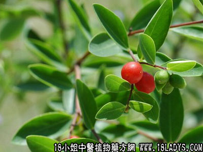

了哥王(中药材植物名:了哥王)(植物科目:瑞香科)

别名：狗信豹、独薯根、鸡仔麻、雀仔麻、狗信草、地锦树根。
植物名：了哥王。
生长环境：本品为常绿分枝灌木。通常生气于丘陵地的山脚一下的灌丛中。
分布：我国南部广布，广州附近山野间极常见。
入药部分：根。
采集期：全年。
自采地点：山岗。
性味：性凉、味淡、有毒。鲜用刺激咽喉，宜久煎。
功能：散毒、泻大便。
主治、用量和用法：1、狗咬伤：干根2至4两，清水久煎；2、瘰疬：干根1至2两，清水久煎服；3、小肠气痛：干根1至1两半，清水久煎服；4、梅毒，配伍用。
验方：（治梅毒方）了哥王1两、黑面神根1两、青壳鸭蛋1只（连壳煲热后，去壳再煎）、清水四碗，煎成一碗服。
（方解）了哥王专于解毒，能治多种热性病，并治梅毒、麻风有效。本方配黑面神、青壳鸭蛋治梅毒。此法早为民间医生熟悉，疗效良好。
（方歌）治疗梅毒了哥王，黑面神来两力帮，青皮鸭蛋同煎服，民间常用起膏盲。
附录：（叶）1、治疗毒疮：生用适量，片糖少许，捣烂敷患处。2、（治跌打肿痛）捣烂，加酒煮，热敷。
参考资料：（广东省卫生厅防疫局介绍）以了哥王1斤、鸟乔叶1斤、尖嘴辣椒1斤、野芋头2斤（连茎叶）、苦楝叶1斤半、生马前子半斤、茶仔饼1斤、混合加水1倍，浸至24小时，或煮煎一小时，可杀蚊蝇及农业害虫。蛀心虫。
《广东中医锦方集第一集》广宁麻风防治站介绍了哥王合剂治麻风病有效。其配方如下：干了哥王5斤、大枫子肉3两、秦艽4两、土茯苓4两、当归4两、陈皮4两、首乌4两、苍术4两、川乌3两、川牛七3两、荆芥4两、羌活2两、桂皮2两、吐丝子5两、炒热米粉14两，制为丸剂（制服法可参开原书）。
《广东中医》（1957.1）介绍了哥王治疗一些经过正确诊断和密切观察的显著疗效病例，有麻风病、风湿病、支气管哮喘、百日咳、脓疮，煎剂的制法和剂量如下：
煎剂方法：晒干了哥王根，每4市斤加水25市斤，煎煮5小时（约余下6市斤水），将水滤出，再加水25市斤，煮5小时，将水滤出，与第一次煎得的水合并即得了哥王煎剂。剂量：每日服3次，成人每次30CC，1～3岁每次10CC，4～8岁每次15CC，9～12岁每次20CC，13岁以上可照成人剂量。如按法泡制及剂量服食，则全无毒性。如用了哥王炖鸡，可用3钱，以及鸡肉4两、水适量，膈水炖至至少7小时，一次服。如炖时间不狗7小时，会引起喉闷、呕吐、腹泻等副作用。如有此反应，用甘草2～3钱煎服可止。
了哥王化学成分的初步试验，成分以树脂及粘液质为主，并含结晶性的酚性物质，不饱和留醇及挥发油。其数值有强烈的下泻作用。了哥王对皮肤有一种强烈的刺激成分。
《广东中医》（1957.5）介绍：了哥王治风湿病，曾食柳酸无效，改服了哥王有显著疗效。
《广州常用草药验方集解》1、黄沙卫生院治疗淋巴腺结核方：了哥王4市斤、加水25市斤、煎5小时，将水滤出，再加水25市斤于药渣内，再煎5小时，将两次药液合并即成了哥王液。用法：每日三次，承人每次30毫升，儿童酌减。2、治疗腮腺炎方：50%了哥王溶液，1~5岁用30毫升，一日三次分服。50%酒精100毫升，湿敷局部。3、治疗颈疬方：生了哥王50斤、生如意花头5斤、斩碎洗净，以水30斤煎熬，煎至5～6斤，滤去药渣，再熬至糖胶状，加炒热米粉拌和为丸，入龙眼核大，晒干备用。服法：大人每服5个，儿童每服1个或半个，打碎或加糖服食，每天2次，重症每天可服至3次，开水送服。
本品可治淋巴腺炎、蜂窝织炎、痈疮、溃疡、腮腺炎、乳腺炎等各种疾患，并肯定其疗效。了哥王似对体表一切阴性阳性结毒，俱有作用。此药繁殖甚广，山岗皆有，最宜推广使用，但妥注意制法，久煎无毒，否则反应甚大。